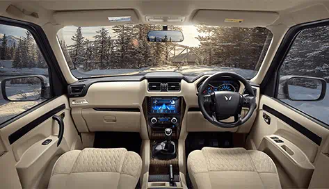
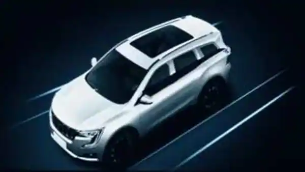
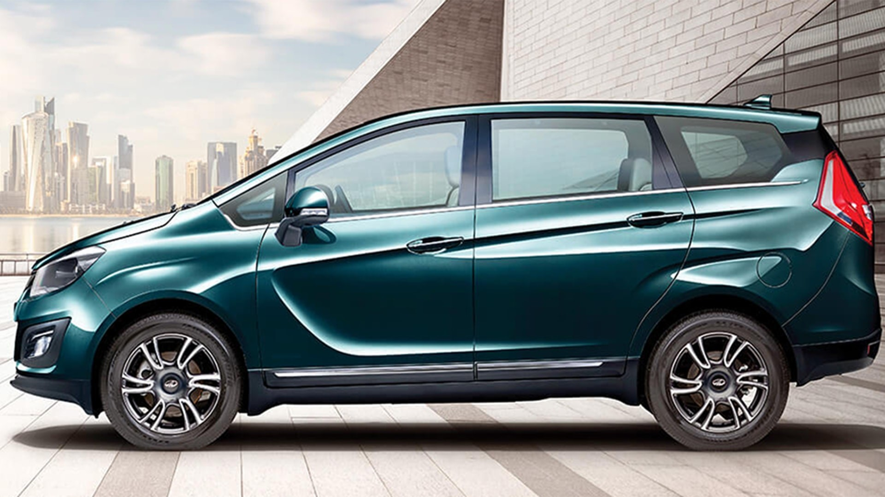
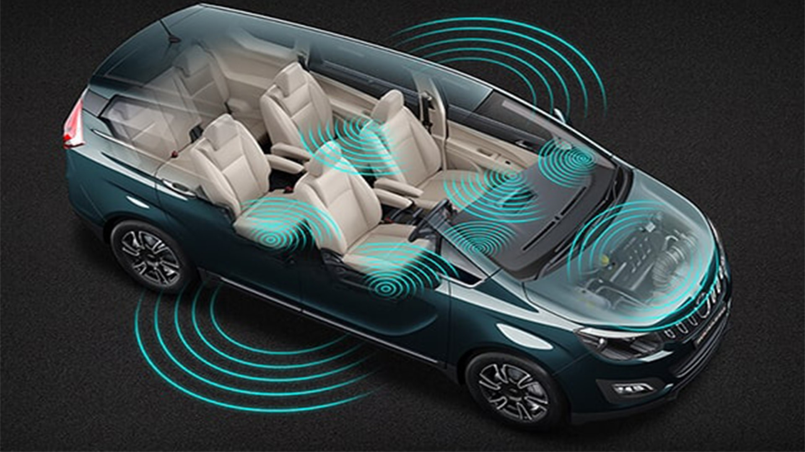
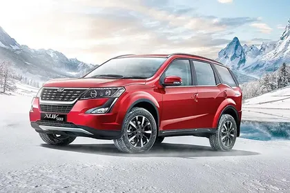
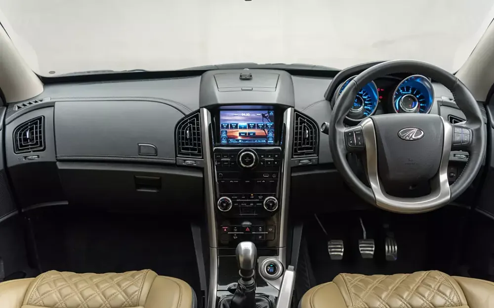
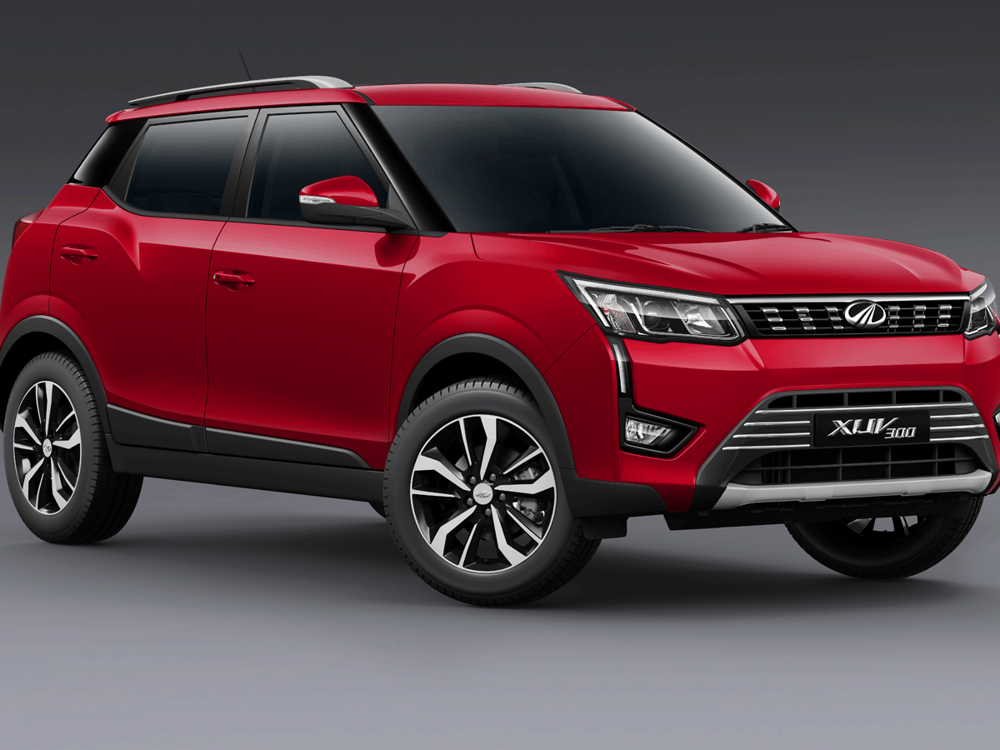
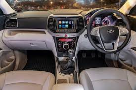
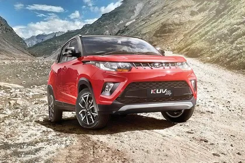
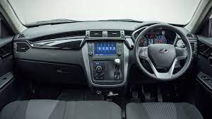

SPORT UTILITY VEHICLES
MAHINDRA AND MAHINDRA
Mahindra Thar
- Features:
- Safty Rateing by Global NCAP:4-Start.
- Outstanding off-roading prowess.
- 4x4 and 4x2 are types.
- Mahindra Thar's base variant has a 4 cylinder, 1497-2184 cc, mHawk 130 Engine
- It is available with Automatic & Manual transmission.
- Ex-Showroom Price:
- ₹11 lakhs - ₹16.7 lakhs.
- Test drive:
- Diesel engine is 2184 cc and 1497 cc while the Petrol engine is 1997 cc.
- Mileage:
- Thar has a mileage of 15.2 kmpl.
- Dimensions:
- 3,985 mm L x 1,820 mm W x 1,844-1,899 mm H.
Mahindra Scorpio N
- Features:
- Safty Rateing by Global NCAP:5-Star.
- 2nd Gen mHawk Diesel Engine Deliver Incredible Performance
- It is available with a 6-speed Manual and a 6-speed TC Automatic transmission.
- Ex-Showroom Price:
- Starts at ₹13.05 Lakh
- Test Drive:
- Test Drive All-New ScorpioN Available in Diesel.
- Mileage:
- starts at 14.45 and goes up to 16 kmpl.
- Dimensions:
- 4662mm L x 1917mm W x 1857mm H
Mahindra Scorpio classic
 |
 |
 |
- Features:
- Safty Rateing by Global NCAP:5-4.5 star.
- Feel renewed power of a 2nd generation mHAWK engine that delivers a power of 97 kW and torque of 300 Nm.
- It is powered by a 2184 cc engine which is available with a Manual transmission. The 2184 cc engine puts out 130.07bhp@3750rpm of power and 300Nm@1600-2800rpm of torque.
- It is 8 seater.
- Ex-Showroom Price:
- ₹13.3 lakhs - ₹17.1 lakhs.
- Test drive:
- The specifications of Mahindra Scorpio Classic S 11 are Diesel Fuel Type,2184 Engine Displacement (cc),4 No. of cylinder.
- Mileage:
- It is 16.46kmpl.
- Dimensions:
- 4,456 mm L x 1,820 mm W x 1,995 mm H.
XUV 700
 |
 |
 |
- Features:
- Safty Rateing by Global NCAP:5-star.
- The Mahindra XUV700 boasts a tremendously efficient 2.0-litre turbo-petrol mStallion engine with Direct Injection (TGDi).
- The Mahindra XUV700 has 1 Diesel Engine and 1 Petrol Engine on offer. The Diesel engine is 2198 cc while the Petrol engine is 1999 cc.
- It is 5 or 7 seater.
- The XUV700 is available with both manual and automatic transmission options.
- Ex-Showroom Price:
- ₹14 lakhs - ₹26.6 lakhs.
- Test drive:
- The XUV700 is offered with one petrol engine and one diesel engine option.
- Mileage:
- 3.00 kmpl for city driving and 16.00 kmpl for highway driving. XUV700 Petrol mileage is 12.50 kmpl for city driving and 16.00 kmpl for highway driving. XUV700 Petrol comes with a 60-litre fuel tank.
- Dimensions:
- 4,695 mm L x 1,890 mm W x 1,755 mm H.
Marazzo
|  |
 |
 |
- Features:
- Safty Rateing by Global NCAP:4-star.
- The 1497 cc Diesel engine generates a power of 120.96bhp@3500rpm and a torque of 300Nm@1750-2500rpm.
- Mahindra Marazzo is available in Manual transmission only.
- Engine. 1497 cc, 4 Cylinders Inline, 4 Valves/Cylinder, DOHC · Engine Type. 1.5L Turbocharged I4.
- It is 7 or 8 seater.
- Ex-Showroom Price:
- ₹14.1 lakhs - ₹16.4 lakhs.
- Test drive:
- It is offers 1.5 L 4-cylinder diesel.
- Mileage:
- The mileage of Mahindra Marazzo is 17.3 Kmpl.
- Dimensions:
- 4,585 mm L x 1,866 mm W x 1,774 mm H.
XUV 500
|  |
 |
 |
- Features:
- Safty Rateing by Global NCAP:4-star.
- Diesel 2179 cc 4 Cylinders Inline 4 Valves/Cylinder, DOHC, mHawk155.
- It is available with Manual & Automatic transmission.
- The Diesel engine is 2179 cc and 1997 cc while the Petrol engine is 2179 cc.
- It offers 7 seater.
- Ex-Showroom Price:
- starts at ₹12.37 to ₹20.11.
- Test drive:
- The Mahindra XUV500 has 2 Diesel Engine and 1 Petrol Engine on offer.
- Mileage:
- The Manual Diesel variant has a mileage of 16.0 kmpl.
- The Automatic Diesel variant has a mileage of 16.0 kmpl.
- The Automatic Petrol variant has a mileage of 16.0 kmpl.
- Dimensions:
- 4,585 mm L x 1,890 mm W x 1,785 mm H.
XUV 300
|  |
 |
 |
- Features:
- Safty Rateing by Global NCAP:5-star.
- The 1497 cc Diesel engine generates a power of 115.05bhp@3750rpm and a torque of 300Nm@1500-2500rpm.
- The engine power of Mahindra XUV300 petrol version is 108.62bhp@5000rpm.
- It is available with Manual & Automatic transmission.
- It offers 5 seater capacity.
- Ex-Showroom Price:
- starts at ₹8.66 lakhs - ₹14.6 lakhs.
- Test drive:
- The Mahindra XUV300 has 1 Diesel Engine and 1 Petrol Engine on offer.
- Mileage:
- The Manual Diesel variant has a mileage of 20.1 kmpl.
- The Automatic Diesel variant has a mileage of 19.7 kmpl.
- The Manual Petrol variant has a mileage of 18.24 kmpl.
- The Automatic Petrol variant has a mileage of 16.5 kmpl.
- Dimensions:
- 3,995 mm L x 1,821 mm W x 1,627 mm H.
KUV 100
|  |
 |
 |
- Features:
- Safty Rateing by Global NCAP:4-star.
- The Diesel engine is 1198 cc while the Petrol engine is 1198 cc.
- It is available with Manual transmission.
- It offers 5 seater capacity.
- KUV100 NXT is available in 23 variants. All the variants are Manual.
- Ex-Showroom Price:
- The price of Petrol variant for KUV100 NXT ranges between Rs. 4.96 Lakh - Rs. 7.93 Lakh.
- The price of Diesel variant for KUV100 NXT ranges between Rs. 6.00 Lakh - Rs. 8.02 Lakh.
- Test drive:
- The Mahindra kuv 100 has 1 Diesel Engine and 1 Petrol Engine on offer.
- Mileage:
- The Manual Diesel variant has a mileage of 25.32 kmpl.
- The Manual Petrol variant has a mileage of 18.15 kmpl.
- Dimensions:
- 3,675 mm L x 1,705 mm W x 1,635 mm H.
* * *
BOOK NOW YOUR DREAM
CONTACT US:
Mobile Number:+91-2345623594
Address:Ashram Rd, Ellisbridge, Ahmedabad, Gujarat 380009.
E-mail:abc@gmail.com
Follow us:
Facebook:abc@fb.com
Instagram:abc@instagram.com
Twitter:abc@twitter.com